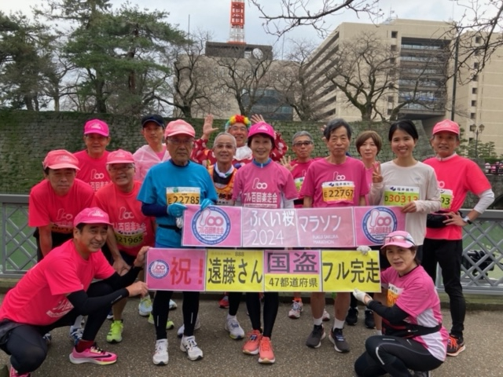

2024-03-31 06:27:25
会員No.888 （東京都）

| No | 開催地 | 開催日 | 大会回数 | 大会名 | タイム |
|---|---|---|---|---|---|
| 1 | 長野 | 2005-04-17 | 第7回 | 長野 | 3:56:14 |
| 2 | 茨城 | 2005-11-27 | 第25回 | つくば | 3:43:16 |
| 3 | 鹿児島 | 2007-01-14 | 第20回 | いぶすき菜の花 | 4:08:33 |
| 4 | 神奈川 | 2007-03-18 | 第1回 | 湘南国際 | 3:46:06 |
| 5 | 北海道 | 2007-09-09 | 2007年 | 北海道 | 4:08:52 |
| 6 | 千葉 | 2008-03-30 | 第27回 | 佐倉朝日健康 | 4:15:09 |
| 7 | 徳島 | 2008-04-27 | 第1回 | 徳島 | 3:52:45 |
| 8 | 沖縄 | 2008-10-26 | 第20回 | 久米島 | 4:08:48 |
| 9 | 栃木 | 2008-11-23 | 第21回 | 大田原 | 3:58:14 |
| 10 | 東京 | 2009-03-15 | 第12回 | 荒川市民 | 3:53:24 |
| 11 | 秋田 | 2009-09-20 | 第24回 | 田沢湖 | 4:09:13 |
| 12 | 山梨 | 2009-11-29 | 第34回 | 河口湖日刊スポーツ | 3:52:28 |
| 13 | 富山 | 2010-05-16 | 第7回 | とやま清流 | 4:24:33 |
| 14 | 山口 | 2010-11-07 | 第1回 | 下関海響 | 4:12:56 |
| 15 | 福島 | 2011-02-13 | 第2回 | いわき | 4:15:53 |
| 16 | 大阪 | 2011-10-30 | 第1回 | 大阪 | 5:45:51 |
| 17 | 静岡 | 2011-11-20 | 東日本大震災復興記念 | ふじのくに新東名 | 4:08:11 |
| 18 | 奈良 | 2011-12-11 | 第2回 | 奈良 | 4:04:40 |
| 19 | 愛媛 | 2012-02-05 | 第50回 | 愛媛 | 4:09:00 |
| 20 | 愛知 | 2012-03-11 | 第1回 | 名古屋ウィメンズ | 4:01:31 |
| 21 | 新潟 | 2012-05-20 | 第12回 | 柏崎潮風 | 4:49:06 |
| 22 | 大分 | 2012-11-11 | 第23回 | 仏の里くにさきとみくじ | 4:37:08 |
| 23 | 兵庫 | 2012-11-25 | 第2回 | 神戸 | 4:13:59 |
| 24 | 宮崎 | 2012-12-09 | 第26回 | 青島太平洋 | 4:46:33 |
| 25 | 高知 | 2013-02-24 | 第1回 | 高知竜馬 | 4:18:47 |
| 26 | 京都 | 2013-03-10 | 第2回 | 京都 | 4:23:15 |
| 27 | 佐賀 | 2013-04-07 | 第1回 | 佐賀 | 4:15:57 |
| 28 | 山形 | 2013-10-20 | 第27回 | 長井 | 4:44:15 |
| 29 | 岐阜 | 2013-11-10 | 2013年 | いびがわ | 4:34:58 |
| 30 | 福岡 | 2014-02-09 | 第1回 | 北九州 | 4:22:09 |
| 31 | 石川 | 2014-03-23 | 第6回 | 能登和倉 | 4:18:31 |
| 32 | 群馬 | 2014-04-20 | 第1回 | 前橋渋川 | 4:25:10 |
| 33 | 青森 | 2014-10-05 | 第12回 | 弘前白神アップル | 4:27:46 |
| 34 | 滋賀 | 2014-11-02 | 2014年 | あいの土山 | 4:28:30 |
| 35 | 香川 | 2014-11-30 | 第35回 | 瀬戸内海タートル | 4:20:22 |
| 36 | 熊本 | 2015-02-15 | 第1回 | 熊本城 | 4:20:03 |
| 37 | 広島 | 2015-11-15 | 第25回 | 広島ベイ | 4:25:22 |
| 38 | 埼玉 | 2016-11-13 | 第2回 | さいたま国際 | 4:48:01 |
| 39 | 和歌山 | 2017-02-05 | 第22回 | 紀州口熊野 | 4:38:56 |
| 40 | 宮城 | 2017-03-19 | 2017年 | 東北風土 | 5:08:50 |
| 41 | 岩手 | 2017-05-21 | 第1回 | いわて奥州きらめき | 4:53:07 |
| 42 | 岡山 | 2017-11-12 | 第3回 | 岡山 | 4:36:52 |
| 43 | 鳥取 | 2018-03-11 | 第1回 | 鳥取 | 4:49:08 |
| 44 | 島根 | 2018-12-02 | 第1回 | 国宝松江城 | 4:47:10 |
| 45 | 長崎 | 2020-02-23 | 第20回 | 五島つばき | 5:46:49 |
| 46 | 三重 | 2022-12-18 | 第1回 | みえ松阪 | 5:12:14 |
| 47 | 福井 | 2024-03-31 | 第1回 | ふくい桜 | 5:10:43 |